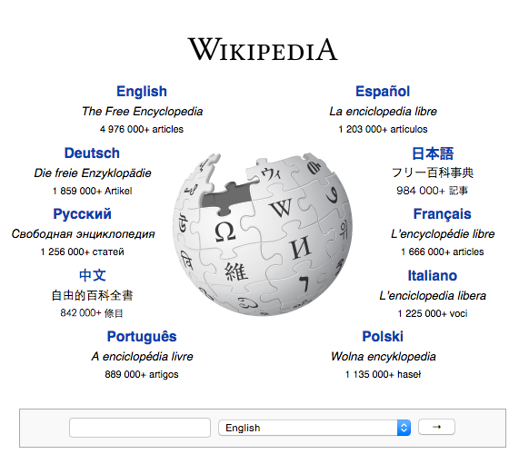
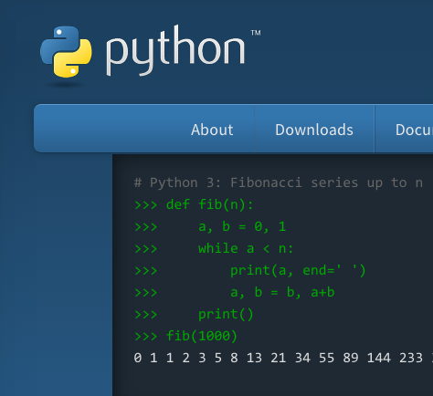
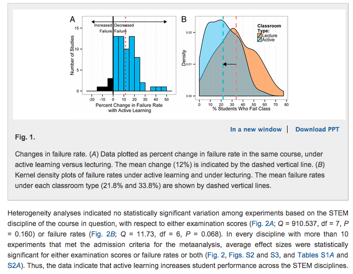
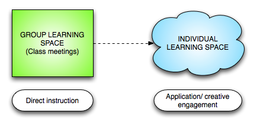
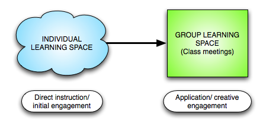

Rethinking Class Time Using Accessible Technology
Robert Talbert, Grand Valley State University
This talk located at:
rtalbert.org/kcexpo
Use Twitter hashtag #--- for backchannel
There has never been a better time to be a learner than now.
  Accessible Technology
Economically accessible (free or cheap)
Physically accessible (portable, multi-platform, hardware-agnostic)
Intellectually accessible (easy to learn and use)
Three experiences with accessible technology
Ring theory
What these experiences have in common
Class can be a barrier
Class can be a maker space
Traditional class time configuration and the case for active learning
Meta-analysis of 225 separate studies on active learning versus lecture.
Students in lecture courses were 55% more likely to fail the course than students in active-learning focused courses.
Students in active learning courses scored about half a standard deviation higher on exams than students in lecture courses.
"If the experiments analyzed here had been conducted as randomized controlled trials of medical interventions, they may have been stopped for benefit—meaning that enrolling patients in the control condition might be discontinued because the treatment being tested was clearly more beneficial."
Recentering education on active learning is an ethical and economic issue.
Not an academic freedom issue.
PNAS is not the only study
Hake, 2006: Physics students in active learning classes outperform students in lecture classes by 2 SD's
Lorenzo, Crouch, and Mazur, 2006:Gender differences in performance on physics concept inventories eliminated when using peer instruction
Poh, Swenson, and Picard, 2010:Students in lecture courses show flatline phyisological arousal
Academics often seem to value research in every area save one: their own efforts to foster student learning https://t.co/LjNSPJXixe
— Ken Bain (@KenBain1) August 23, 2015Two questions:
How do we reconfigure class time to enable active learning?
How can accessible technology help enable active learning?
Flipped learning design
Traditional class structure
Flipped learning class structure
The "Four Pillars of F-L-I-P"
Flexible Environment
Learning Culture
Intentional Content
Professional Educator
flippedlearning.org/definitionFlipped learning >>> "flipped classroom"
Using accessible technology to engage students in their individual learning spaces
Using interactive Sage code
http://rtalbert.org/discretecs/GuidedPractice/gp63.htmlUsing accessible technology to engage students in the group learning space
Interactives using Desmos

Interactives using SageMath Cloud (http://cloud.sagemath.com)
Peer instruction
The first derivative of a function f is shown below. What are the critical values of f? Select all that apply.

- x = -4
- x = -1
- x = 0
- x = 1
Eric Mazur, peer instruction in Physics at Harvard
This is your learning space
Challenges
Ensuring access
To students with physical disabilities
To students with financial or logistical challenges
To adjunct and contingent faculty who lack equipment and time
Overcoming misconceptions
Teaching = lecturing
Math = Getting right answers efficiently
Technology = gimmick
Making adjustments
Learning to be guide, coach, data scientist
Learning to say no to some technology
Helping students adjust to becoming math makers
Some things aren't challenging
Personal challenges for the conference
Think creatively about class time
Remember: Active learning is an ethical issue, tech can help
Have an optimistic agenda
Questions/discussion
Thank you
Robert Talbert, Associate Professor of Mathematics
Grand Valley State University, Allendale, Michigan USA
rtalbert.org • @RobertTalbert • +RobertTalbert
Presentation: rtalbert.org/kcexpo
Image credits
- Optimism: https://www.flickr.com/photos/56218409@N03/
- Chromebooks: https://www.flickr.com/photos/kjarrett/
- Puzzle: https://www.flickr.com/photos/teegardin/
- Connections: https://www.flickr.com/photos/31246066@N04/
- Maker space: https://www.flickr.com/photos/maltman23/
- Classroom: https://www.flickr.com/photos/94433617@N02/
- Challenge: https://www.flickr.com/photos/flannol/